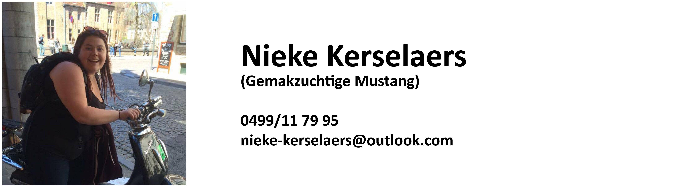
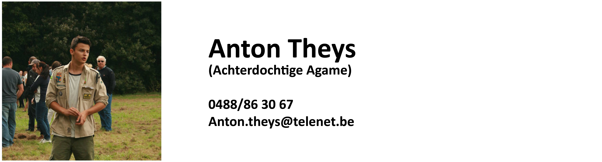
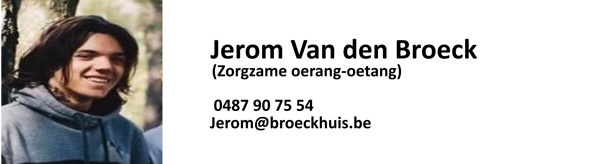
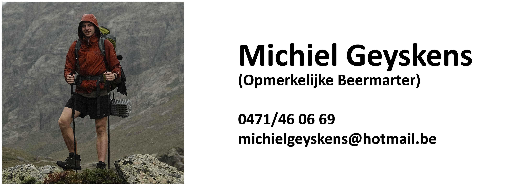
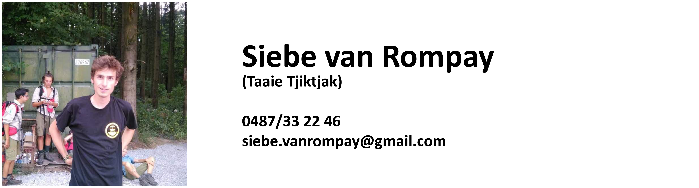
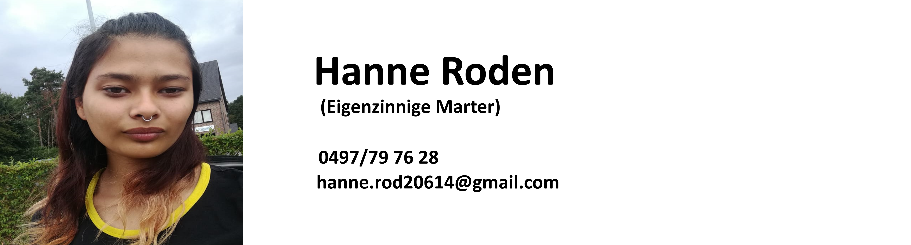
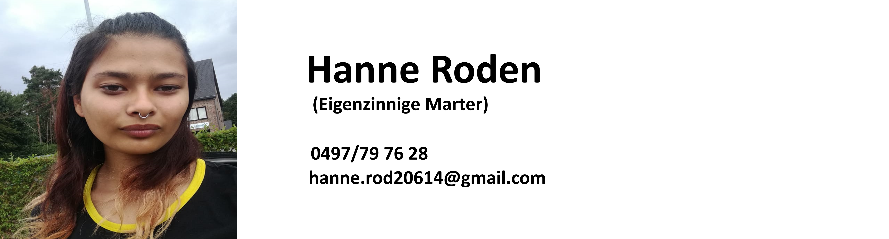
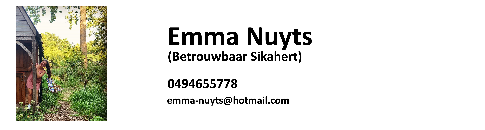
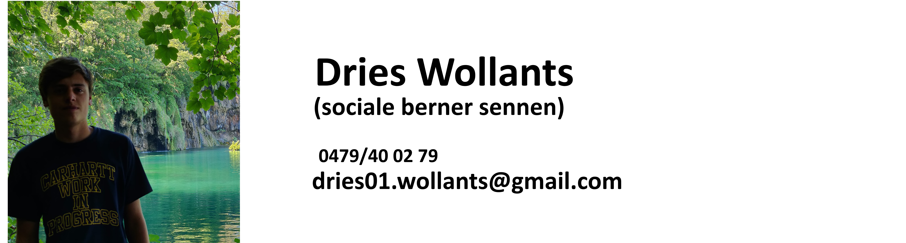

Takken
Leiding.
Onze leidingsploeg is een toffe groep die het goed met elkaar kan vinden. We gaan dan ook regelmatig eens op weekend of een avondje uit. Natuurlijk staan zij elke week weer paraat om in het weekend bezig te zijn met de leden, en tijdens de week om onze evenementen en activiteiten te regelen
We kunnen zeker nog wat extra medewerkers gebruiken dus als je graag onze leidingsploeg willen vergezellen, kom dan eens lang op de scouts of laat ons iets weten!!
Hieronder vind je een overzicht van de verschillende takken binnen onze scouts en welke leiding er tijdens de activiteiten verantwoordelijke is voor je oogappel. Wil jouw zoon of dochter graag onze toffe scoutsgroep vergezellen? Aarzel dan zeker niet om contact op te nemen met de groepsleiding:
Groepsleiding
Verkenners

Verkenners is voor jongens vanaf het 3de middelbaar (rond de 14-17 jaar). Het is een avontuur van 3 jaar waar je zeer veel leert over zelfstandig zijn, verantwoordelijkheid nemen maar ook plezier maken. Verkenners zijn bij onze scouts voorlopig de oudste tak. Dit wilt zeggen dat ze tijdens deze 3 jaar stilletjes klaargestoomd worden om leiding te worden. Hierdoor kan het af en toe zijn dat ze op zaterdag mee leiding mogen geven of activiteiten in elkaar steken voor andere takken.
Gidsen

Gidsen zijn meisjes vanaf het 3de middelbaar(rond de 14-17jaar). Het is een avontuur van 3 jaar waar je zeer veel leert over zelfstandig zijn, verantwoordelijkheid nemen maar ook plezier maken. Gidsen zijn samen met de verkenners bij onze scouts voorlopig de oudste takken. Dit wilt zeggen dat ze tijdens deze 3 jaar stilletjes klaargestoomd worden om leiding te worden. Hierdoor kan het af en toe zijn dat ze op zaterdag mee leiding mogen geven of activiteiten in elkaar steken voor andere takken.
Jong-verkenners
  
Jong-Verkenners is de tak voor de jongens van 11 tot 13 jaar. In deze tak komen ze elke week voor nieuwe uitdagingen te staan. Samenwerken, verkennen en zich voor anderen inzetten zijn enkele dingen die de jongens moeten leren. Op het einde van hun 3 jaar bij de Jong-Verkenners krijgen de leden dan een Totemnaam. Bij het kiezen van deze Totemnaam worden de eigenschappen van een dier gelinkt aan die van de jongens, deze dierennaam zullen ze dan voor de rest van hun scoutscarrière behouden.
Jong-gidsen
Jong-Gidsen is de tak voor de meisjes van 11 tot 13 jaar. Bij deze tak doen we elke week leuke activiteiten waarbij de Jong-Gidsen zich volledig kunnen uitleven. Tijdens een leuk stad- of bosspel leren de Jong-Gidsen om met elkaar samen te werken en zo leren ze tevens ook nieuwe vrienden kennen, waardoor er een leuke groepssfeer ontstaat. De Jong-Gidsen krijgen na hun 3de jaar een totemnaam. Bij het kiezen van deze Totemnaam worden de eigenschappen van een dier gelinkt aan die van de meisjes, deze dierennaam zullen ze dan voor de rest van hun scoutscarrière behouden.
Welpen


 

De jongens van het derde tot vijfde leerjaar (8 tot 11 jaar) behoren tot de welpen. Samen spelen, ravotten en zot doen is waar de welpen goed in zijn
Wekelijks maken ze de buurt van Averbode onveilig. Al spelenderwijs leren ze iets over de scouts en leren ze samenwerken. Als snel leren ze op de scouts nieuwe vriendjes kennen. Kortom, elke week amusement verzekerd!
Kabouters


De meisjes van het derde tot vijfde leerjaar (8 tot 11 jaar) behoren tot de kabouters. Samen spelen, ravotten en zot doen is waar de kabouters goed in zijn
Wekelijks maken ze de buurt van Averbode onveilig. Al spelenderwijs leren ze iets over de scouts en leren ze samenwerken. Als snel leren ze op de scouts nieuwe vriendjes kennen. Kortom, elke week amusement verzekerd!
Kapoenen

De kapoenen zijn met hun leeftijd van 6 tot 8 jaar de jongste van alle takken. De kapoenentak is gemengd, zowel jongens als meisjes zijn welkom. Bij deze tak staat één ding centraal: spelen, spelen en nog eens spelen. Van twee tot vijf rennen, vliegen en lopen de kapoenen door de omgeving van Averbode. Al spelend leren ze iets over de scouts, onze gebruiken en regels.
De kapoenenleider is een ras apart: spelletjesbedenker, pleisterplakker, speelkameraad, koekenleveraar, wijze verteller, voorzichtigheidsexpert, hardloper, worstelaar, vermommingsexpert en licht gestoorde gek in het algemeen. Als de sfeer goed zit, is er één garantie: uw kind komt moe maar voldaan naar huis.